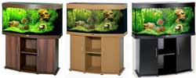

Freshwater fish and freshwater plants are available in an amazing variety of shapes and sizes. Fish are imported from all over the world, as well as bred and raised domestically in the United States. We offer one of the widest varieties of freshwater fish online in the US, if not the widest variety. Our dedicated fish room staff has many years of experience in fish husbandry, and every aquarium in our fish room receives expert care daily. Order some of our live fish or plants today and we'll ship them to your door.
Freshwater fish and freshwater plants are available in an amazing variety of shapes and sizes. Fish are imported from all over the world, as well as bred and raised domestically in the United States. We offer one of the widest varieties of freshwater fish online in the US, if not the widest variety. Our dedicated fish room staff has many years of experience in fish husbandry, and every aquarium in our fish room receives expert care daily. Order some of our live fish or plants today and we'll ship them to your door.
 Oxygenating pond plants are true aquatic plants which will grow completely submerged in the water. These plants are also well suited to the home aquarium, and are very versatile. Anacharis and other oxygenating plants will not hold up well over extreme cold winters,
but they will survive with partial die back in zones which don't get completely frozen. These plants help maintain a high level of oxygen in ponds and they also help compete against algae for nutrients which helps to choke the algae out.
Oxygenating pond plants are true aquatic plants which will grow completely submerged in the water. These plants are also well suited to the home aquarium, and are very versatile. Anacharis and other oxygenating plants will not hold up well over extreme cold winters,
but they will survive with partial die back in zones which don't get completely frozen. These plants help maintain a high level of oxygen in ponds and they also help compete against algae for nutrients which helps to choke the algae out.
 An aquarium (plural aquariums or aquaria) is a vivarium consisting of at least one transparent side in which water-dwelling plants or animals are kept. Fishkeepers use aquaria to keep fish, invertebrates, amphibians, marine mammals, turtles, and aquatic plants. The term combines the Latin root aqua, meaning water, with the suffix -arium, meaning "a place for relating to". An aquarist owns fish or maintains an aquarium, typically constructed of glass or high-strength acrylic plastic. Cuboid aquaria are also known as fish tanks or simply tanks, while bowl-shaped aquaria are also known as fish bowls. Size can range from a small glass bowl to immense public aquaria. Specialized equipment maintains appropriate water quality and other characteristics suitable for the aquarium's residents.